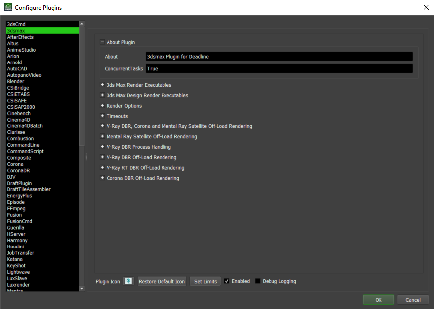

Plugin Configuration¶
Overview¶
There are a wide variety of application specific options that can be configured globally. These options can be modified at any time from the Deadline Monitor while in Power-User Mode by selecting Tools -> Configure Plugins. Any modified settings will take affect the next time a Worker dequeues a task to process.
By default, Deadline ships with best-guess out-of-the-box settings such as the default executable path for each version of an application. Customized Application Configuration is possible as well as the use of ‘wrapper’ application scripts.
Generic Options¶
There are a number of generic options available for each application plugin in Deadline:
Plugin Icon: Click on the icon to browse for a new icon as displayed in the Jobs panel of Monitor.
Restore Default Icon: Clicking on this button will restore the plugin specific icon to its default *.ico file if present in its plugin directory in the repository.
Set Limits: One or more Limits can be applied globally to a certain application plugin. This ensures that limit is applied to all jobs that process using that specific plugin in your farm. The limit must first be created via the Limits panel.
Enabled: Whether or not this plugin is enabled in your farm. This does not stop jobs being submitted for this plugin, but rather stops a Worker from running this plugin type. By default, all plugins are enabled in a new Deadline Repository installation with the exception of the CommandLine, CommandScript and Python plugins. These plugins are deemed a potential security risk as they allow users to submit arbitrary commands/scripts to Deadline, which are then executed on your render nodes.
Debug Logging: Whether or not debug logging is enabled for the Deadline plugin code execution. This does not increase the verbosity of logging for the plugin application. By default, this option is disabled for all plugins. The debug logging option should only be enabled if you are asked to by the Thinkbox support team.

{kind=link}
{kind=link}